Στο Check Mate βλέπετε τους αγώνες που σας έχουν ανατεθεί ως Χειριστής ή Βοηθός, την αμοιβή σας και αν έχετε πληρωθεί. Παίρνετε επίσης email όταν κάτι αλλάζει.
Λειτουργεί σε κινητό, tablet και υπολογιστή. Χρειάζονται τρία βήματα μία φορά: εγγραφή, επιλογή του ονόματός σας, έγκριση από τον διαχειριστή. Μετά βλέπετε κατευθείαν τις αναθέσεις σας.
Βήμα 1 · Εγγραφή (μία φορά)
Ανοίξτε την εφαρμογή. Θα δείτε την οθόνη εισόδου.
- Πατήστε Εγγραφή.
- Γράψτε ονοματεπώνυμο, email και έναν κωδικό (τουλάχιστον 6 χαρακτήρες) δύο φορές.
- Πατήστε Δημιουργία λογαριασμού.
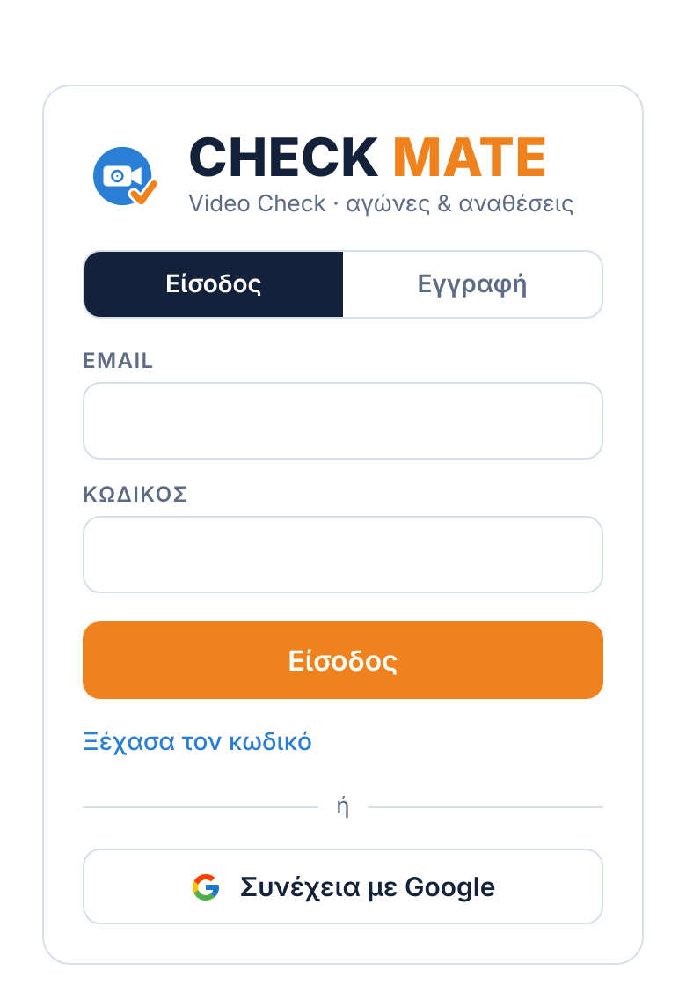
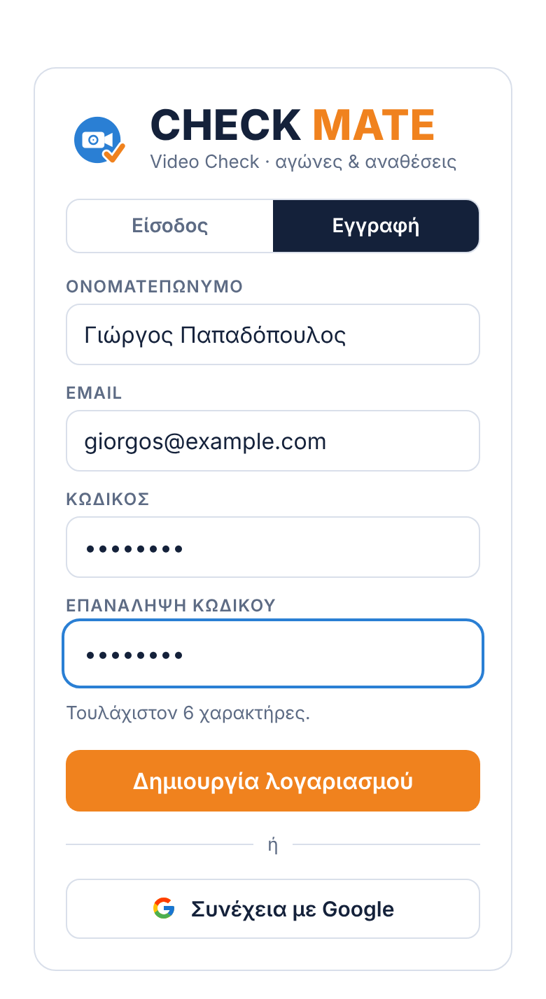
Αν έχετε Gmail, μπορείτε απλά να πατήσετε Συνέχεια με Google και να διαλέξετε τον λογαριασμό σας, χωρίς νέο κωδικό. Τις επόμενες φορές μπαίνετε από την καρτέλα Είσοδος με τον ίδιο τρόπο.
Βήμα 2 · Διαλέξτε το όνομά σας
Η εφαρμογή σας ζητά να διαλέξετε το όνομά σας όπως εμφανίζεται στο πρόγραμμα: επώνυμο και αρχικό, π.χ. «ΠΑΠΑΔΟΠΟΥΛΟΣ Γ.».
- Διαλέξτε το όνομά σας από τη λίστα Το όνομά μου.
- Πατήστε Αποστολή αιτήματος.
Ο διαχειριστής εγκρίνει το αίτημα. Μέχρι τότε βλέπετε την οθόνη «Το αίτημα στάλθηκε». Μόλις εγκριθεί, οι αναθέσεις σας εμφανίζονται μόνες τους.
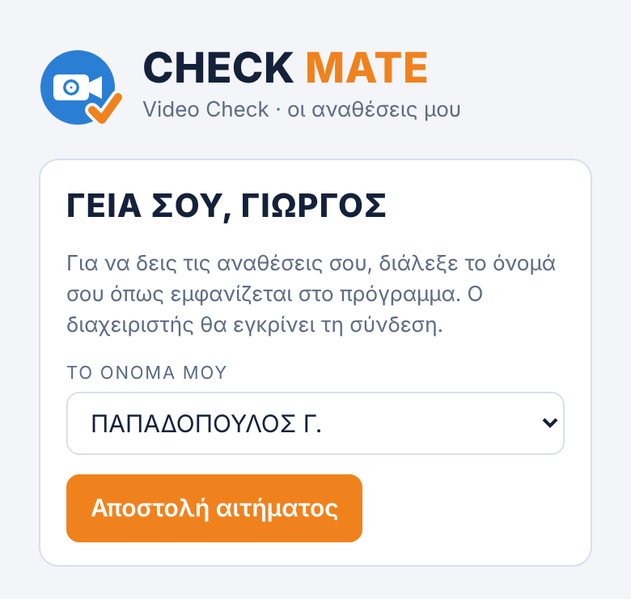
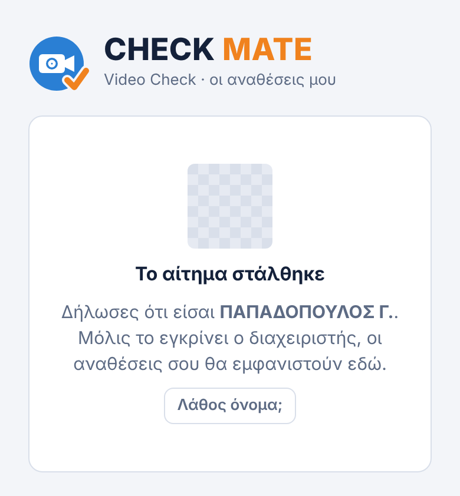
Διαλέξατε λάθος όνομα; Πατήστε Λάθος όνομα; και διαλέξτε ξανά. Αν δεν βρίσκετε το όνομά σας στη λίστα, επικοινωνήστε με τον διαχειριστή.
Βήμα 3 · Οι αναθέσεις μου
Μετά την έγκριση, κάθε φορά που ανοίγετε την εφαρμογή βλέπετε τους επόμενους αγώνες σας. Ο πρώτος σημειώνεται ΕΠΟΜΕΝΗ.
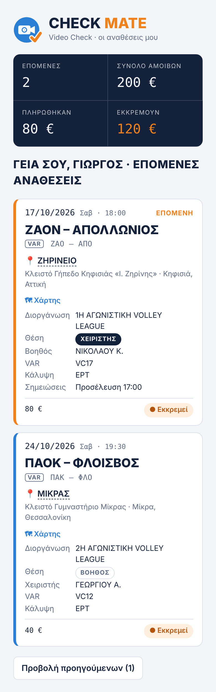
- Στην κορυφή: πόσους επόμενους αγώνες έχετε, το σύνολο των αμοιβών σας, πόσα πληρώθηκαν και πόσα εκκρεμούν.
- Σε κάθε αγώνα: ημερομηνία και ώρα, οι ομάδες, το γήπεδο (📍), η διοργάνωση, η θέση σας (ΧΕΙΡΙΣΤΗΣ ή ΒΟΗΘΟΣ), ο συνεργάτης σας, VAR, κάλυψη και σημειώσεις του διαχειριστή (π.χ. ώρα προσέλευσης).
- Κάτω από τις ομάδες, με την ένδειξη VAR, τα αρκτικόλεξα των ομάδων που θα χρησιμοποιήσετε στο challenge (π.χ. «ΖΑΟ – ΑΠΟ»).
- Κάτω αριστερά: η αμοιβή σας. Κάτω δεξιά: ● Εκκρεμεί ή ✓ Πληρώθηκε, με την ημερομηνία πληρωμής.
- Προβολή προηγούμενων: δείχνει και τους αγώνες που έχουν ήδη γίνει.
Τις αναθέσεις τις ορίζει ο διαχειριστής, και δεν αλλάζουν από εσάς. Αν κάτι δεν είναι σωστό, επικοινωνήστε μαζί του.
Στο ημερολόγιο του κινητού
- Σε κάθε επόμενη ανάθεση υπάρχει το κουμπί 📅 Στο ημερολόγιο του κινητού. Πατήστε το και ανοίξτε το αρχείο που κατεβαίνει: ο αγώνας μπαίνει στο ημερολόγιο του κινητού ή του υπολογιστή σας (Google, Apple, Outlook).
- Το ημερολόγιο σας θυμίζει τον αγώνα 4 ώρες πριν.
- Αν έχετε πολλές αναθέσεις, το 📅 Όλες στο ημερολόγιο τις περνά όλες μαζί.
- Αν αλλάξει κάτι σε έναν αγώνα (π.χ. ώρα), περάστε τον ξανά και σβήστε τον παλιό από το ημερολόγιό σας.
⚠ Άλλαξε: κάτι νέο σε μια ανάθεσή σας
Όταν ο διαχειριστής αλλάζει κάτι σε μια ανάθεσή σας (ώρα, ημερομηνία, γήπεδο, συνεργάτη κ.λπ.), στην κάρτα του αγώνα εμφανίζεται κίτρινη ένδειξη, π.χ. ⚠ Άλλαξε: Ώρα.
Αφού το δείτε, πατήστε ΟΚ και η ένδειξη φεύγει.
Κωλύματα: οι μέρες που δεν μπορείτε
Στην αρχική σελίδα υπάρχει το πλαίσιο Κωλύματα. Πατήστε το για να ανοίξει. Βλέπετε αυτή και την επόμενη εβδομάδα.
- Πατήστε τις μέρες που δεν μπορείτε να δουλέψετε. Πατήστε ξανά για να το ακυρώσετε.
- Αν μπορείτε όλες τις μέρες, πατήστε Διαθέσιμος. Αν δεν μπορείτε όλη την εβδομάδα, πατήστε Κώλυμα όλη.
- Αν θέλετε, γράψτε μια σύντομη σημείωση (π.χ. «μόνο απόγευμα»).
- Αποθηκεύεται αμέσως. Ο διαχειριστής βλέπει τις δηλώσεις σας όταν φτιάχνει το πρόγραμμα.
Αν δεν έχετε δηλώσει για την επόμενη εβδομάδα, στην κορυφή εμφανίζεται πορτοκαλί υπενθύμιση με το κουμπί Δήλωσε τώρα. Δηλώστε κάθε εβδομάδα, έστω και «Διαθέσιμος». Όσοι δεν έχουν δηλώσει μπορεί να λάβουν email υπενθύμισης.
Τα στατιστικά μου
Πατήστε το πλαίσιο Τα στατιστικά μου για να δείτε, ανά σεζόν:
- πόσες αναθέσεις είχατε, πόσες ως Χειριστής και πόσες ως Βοηθός,
- το σύνολο των αμοιβών, πόσα πληρώθηκαν και πόσα εκκρεμούν,
- ανάλυση ανά μήνα και ανά διοργάνωση.
Γήπεδο και χάρτης
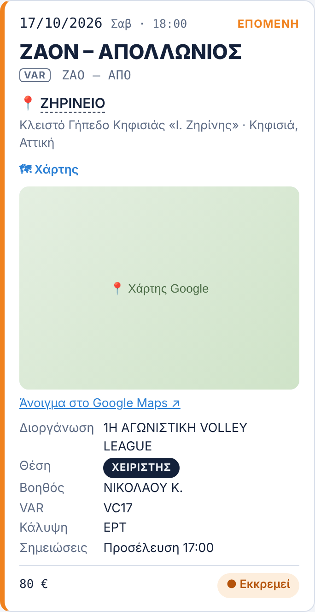
Κάτω από τις ομάδες φαίνεται το γήπεδο:
- 📍 ΖΗΡΙΝΕΙΟ: το όνομα του γηπέδου είναι σύνδεσμος. Στο κινητό ανοίγει κατευθείαν την εφαρμογή Google Maps, για οδηγίες μέχρι εκεί.
- Από κάτω, με μικρά γράμματα, το πλήρες όνομα και η διεύθυνση του γηπέδου.
- 🗺 Χάρτης: ανοίγει μικρό χάρτη μέσα στην κάρτα, με σύνδεσμο «Άνοιγμα στο Google Maps ↗». Πατήστε το ξανά για να κλείσει.
Ο χάρτης εμφανίζεται για τα γήπεδα που έχει συμπληρώσει ο διαχειριστής.
Ειδοποιήσεις email
Όταν προστίθεται, αλλάζει, ακυρώνεται ή πληρώνεται μια ανάθεσή σας, παίρνετε email από το videochallengemate@gmail.com. Το email δείχνει τι άλλαξε, π.χ. την παλιά και τη νέα ώρα, μαζί με τα αρκτικόλεξα VAR των ομάδων και σύνδεσμο 📍 Χάρτης για το γήπεδο.
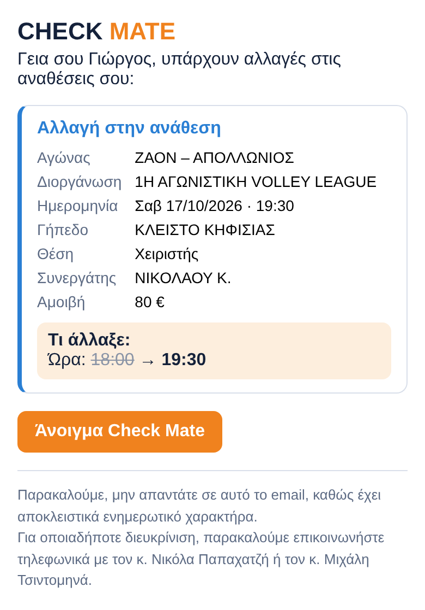
- Μην απαντάτε στο email. Για οποιαδήποτε διευκρίνιση, τηλεφωνήστε στον κ. Νικόλα Παπαχατζή ή στον κ. Μιχάλη Τσιντομηνά.
- Το πρώτο email μπορεί να πάει στα ανεπιθύμητα. Σημειώστε το «Όχι ανεπιθύμητο» και προσθέστε το videochallengemate@gmail.com στις επαφές σας.
- Το κουμπί Άνοιγμα Check Mate ανοίγει κατευθείαν την εφαρμογή.
Εγκατάσταση στο κινητό ή στον υπολογιστή
Η εφαρμογή εγκαθίσταται με δικό της εικονίδιο, σαν κανονική εφαρμογή, και ενημερώνεται μόνη της. Δεν χρειάζεται Play Store ή App Store.
Android
Πατήστε το πορτοκαλί κουμπί 📲 Εγκατάσταση στο κάτω μέρος της σελίδας και μετά Εγκατάσταση.
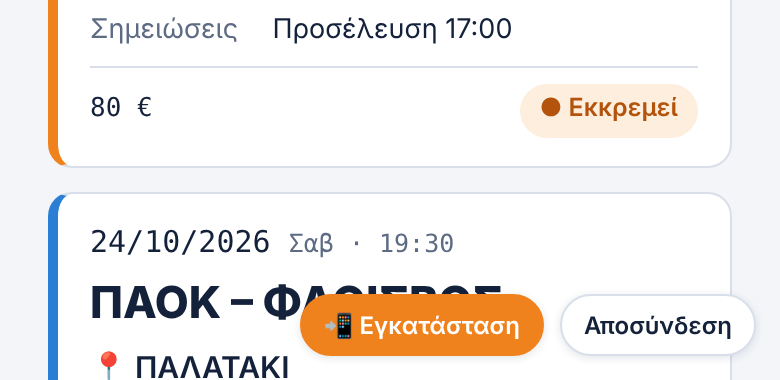
Αν δεν φαίνεται το κουμπί: Chrome → ⋮ πάνω δεξιά → Εγκατάσταση εφαρμογής (ή «Προσθήκη στην αρχική οθόνη»).
iPhone / iPad
Ανοίξτε την εφαρμογή στο Safari. Το κουμπί 📲 Εγκατάσταση δείχνει τα βήματα:
- Πατήστε το κουμπί Κοινοποίηση (τετράγωνο με βέλος ↑).
- Επιλέξτε Προσθήκη στην οικία.
- Πατήστε Προσθήκη.
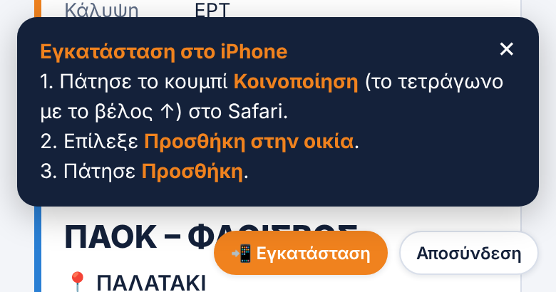
Υπολογιστής
- Chrome: εικονίδιο εγκατάστασης δεξιά στη γραμμή διευθύνσεων, ή ⋮ → Μετάδοση, αποθήκευση και κοινοποίηση → Εγκατάσταση σελίδας ως εφαρμογής.
- Edge: ⋯ → Εφαρμογές → Εγκατάσταση αυτής της τοποθεσίας ως εφαρμογής.
Ξέχασα τον κωδικό
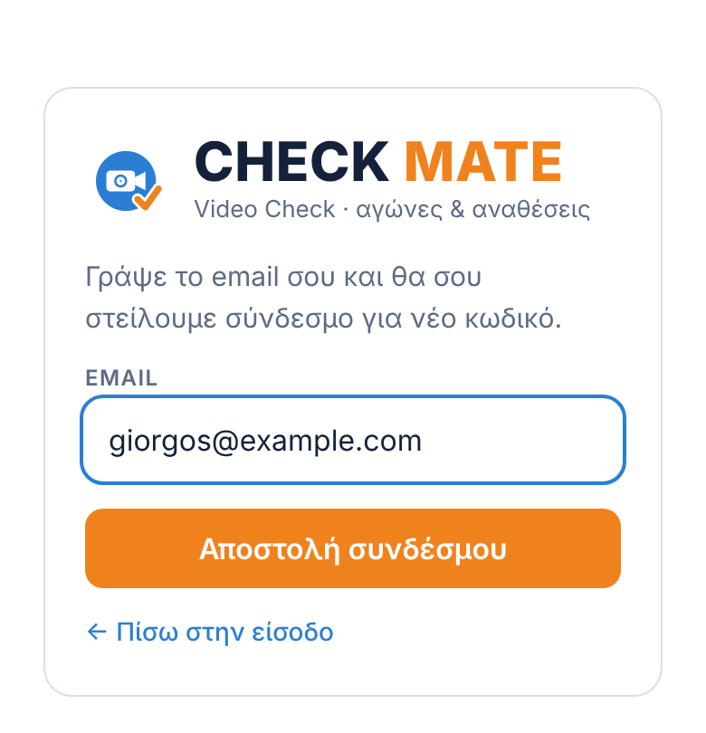
Στην οθόνη εισόδου πατήστε Ξέχασα τον κωδικό, γράψτε το email σας και πατήστε Αποστολή συνδέσμου. Θα λάβετε email με σύνδεσμο για νέο κωδικό.
Αν μπαίνετε με «Συνέχεια με Google», δεν χρειάζεστε κωδικό.
Ημερολόγιο · προσωπική εφαρμογή
Το Ημερολόγιο είναι μια δεύτερη, ξεχωριστή εφαρμογή για προσωπική χρήση. Εκεί γράφετε μόνοι σας τους αγώνες που δουλέψατε και αν πληρωθήκατε, ώστε να τα συγκρίνετε με όσα δείχνει το Check Mate.
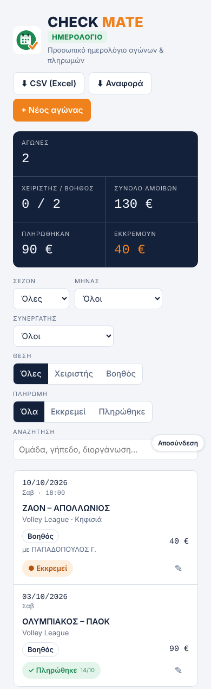
- Μόνο εσείς βλέπετε το ημερολόγιό σας. Δεν το βλέπουν ούτε οι διαχειριστές.
- Οι αγώνες που έχετε κάνει στο Check Mate μπαίνουν μόνοι τους στο Ημερολόγιο όταν το ανοίγετε, ως «Εκκρεμεί». Δεν διπλασιάζονται, και όσους σβήσετε δεν ξαναμπαίνουν.
- Ό,τι γράφετε ή σβήνετε στο Ημερολόγιο δεν αλλάζει τις αναθέσεις σας στο Check Mate.
- Μπαίνετε με τον ίδιο λογαριασμό (email και κωδικό ή Google). Αν δεν έχετε, κάντε Εγγραφή από την οθόνη εισόδου του Ημερολογίου.
- + Νέος αγώνας: ημερομηνία, ώρα, ομάδες, διοργάνωση, γήπεδο, θέση (Χειριστής ή Βοηθός) και, αν θέλετε, ο συνεργάτης σας.
- Η αμοιβή συμπληρώνεται από τις αμοιβές του Check Mate. Μπορείτε να την αλλάξετε.
- Πατήστε ● Εκκρεμεί για να το κάνετε ✓ Πληρώθηκε όταν πληρωθείτε.
- Φίλτρα ανά σεζόν, μήνα, θέση και πληρωμή, με σύνολα στην κορυφή. ⬇ Excel για αρχείο Excel και 📄 Αναφορά για προβολή και εκτύπωση.
Εγκαθίσταται χωριστά, με δικό του πράσινο εικονίδιο, με τον ίδιο τρόπο όπως το Check Mate (δείτε «Εγκατάσταση» πιο πάνω). Έτσι έχετε και τις δύο εφαρμογές στο κινητό.
Οι εφαρμογές μας
Τρεις ξεχωριστές εφαρμογές, με τον ίδιο λογαριασμό. Κάθε μία εγκαθίσταται χωριστά, με το δικό της εικονίδιο.
 Check MateΑναθέσεις αγώνων και πληρωμές.tsimpinosbv.github.io/checkmate/
Check MateΑναθέσεις αγώνων και πληρωμές.tsimpinosbv.github.io/checkmate/ ΗμερολόγιοΤο προσωπικό σας αρχείο αγώνων και πληρωμών.tsimpinosbv.github.io/checkmate/imerologio.html
ΗμερολόγιοΤο προσωπικό σας αρχείο αγώνων και πληρωμών.tsimpinosbv.github.io/checkmate/imerologio.html V.C. TipsΟδηγός στησίματος, tips και γήπεδα.tsimpinosbv.github.io/vctips/
V.C. TipsΟδηγός στησίματος, tips και γήπεδα.tsimpinosbv.github.io/vctips/Όλες μαζί, σε μία σελίδα: Check Mate Suite · tsimpinosbv.github.io
- Στο Suite μπαίνετε μία φορά με τον λογαριασμό σας και ανοίγετε όποια εφαρμογή θέλετε. Αρκεί να εγκαταστήσετε μόνο το Suite.
- Μέσα σε κάθε εφαρμογή, το στρογγυλό κουμπί κάτω αριστερά ανοίγει τις άλλες δύο. Το σπιτάκι γυρίζει στην αρχική σελίδα του Suite.
- Το κουμπί ⓘ Σχετικά στο κάτω μέρος δείχνει τον δημιουργό και στοιχεία επικοινωνίας.
Όταν στέλνετε έναν από αυτούς τους συνδέσμους σε Viber, WhatsApp ή email, εμφανίζεται κάρτα με το εικονίδιο και το όνομα της εφαρμογής.
Συχνά προβλήματα
| Πρόβλημα | Τι κάνω |
|---|---|
| Δεν βλέπω αναθέσεις | Ίσως δεν έχει εγκριθεί ακόμα το αίτημά σας, ή δεν έχετε αναθέσεις αυτή τη στιγμή. Ρωτήστε τον διαχειριστή. |
| «Λάθος email ή κωδικός» | Ελέγξτε το email. Αν γραφτήκατε με Google, πατήστε «Συνέχεια με Google». Αλλιώς «Ξέχασα τον κωδικό». |
| Δεν ήρθε email | Κοιτάξτε στα ανεπιθύμητα και στις «Προωθήσεις». |
| Η εφαρμογή δεν δείχνει τα τελευταία ή τις νέες λειτουργίες | Κλείστε την εφαρμογή εντελώς και ανοίξτε την ξανά. Στον υπολογιστή πατήστε Ctrl+F5. |
| Το αρχείο 📅 δεν μπαίνει στο ημερολόγιο | Ανοίξτε το από τις Λήψεις του κινητού. Στο Android, αν ρωτήσει, διαλέξτε την εφαρμογή Ημερολόγιο ή Google Calendar. |
| Θέλω να βγω | Κουμπί Αποσύνδεση στο κάτω μέρος της σελίδας, δίπλα στο «Σχετικά». |
| Οτιδήποτε άλλο | Τηλεφωνήστε στον κ. Νικόλα Παπαχατζή ή στον κ. Μιχάλη Τσιντομηνά. |
Οι εικόνες είναι παραδείγματα με φανταστικά στοιχεία.